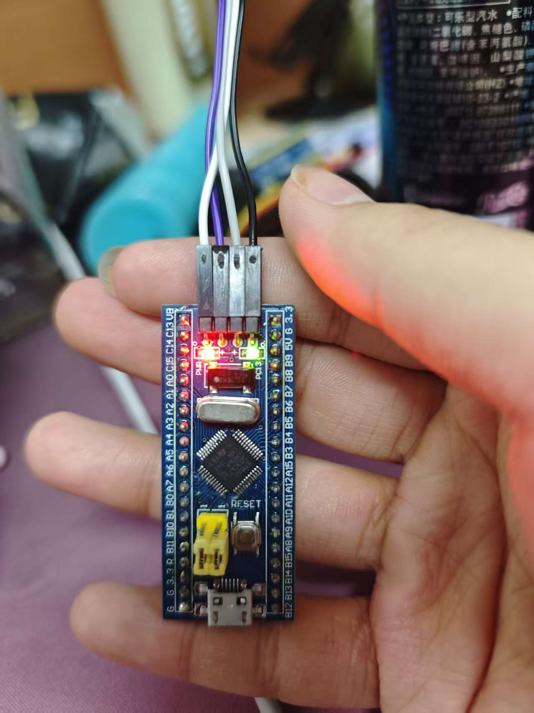
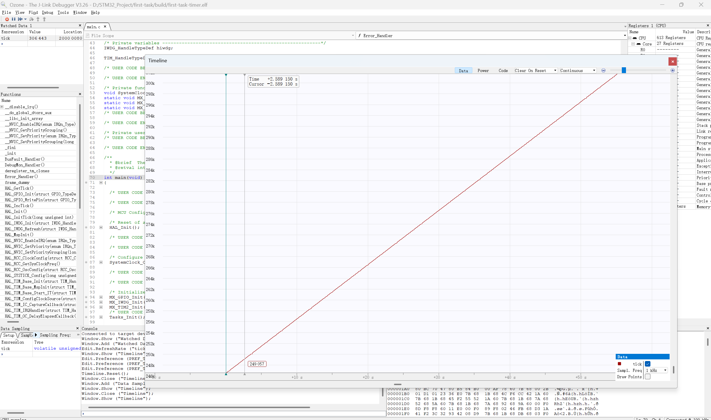
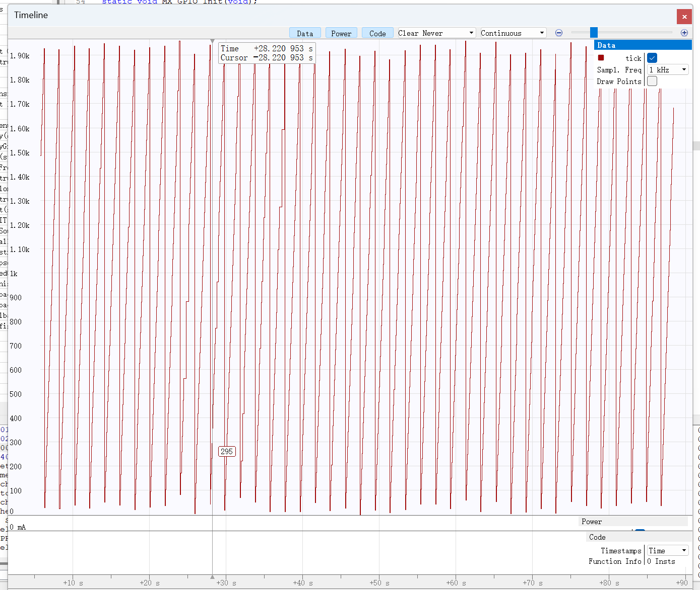

本实验在同一个 STM32CubeMX 工程中完成 GPIO 点灯、1 ms 定时器中断和独立看门狗复位。实测 PC13 板载灯点亮；喂狗时 tick 持续增长；停止喂狗后 tick 反复增长并归零。照片和调试截图集中放在附录。
| 项目 | 配置 |
| 开发板 | STM32F103C6 最小系统板，32 KB Flash，10 KB RAM |
| 时钟 | HSI 8 MHz；AHB、APB1 和 APB2 分频均为 1 |
| 代码生成与构建 | STM32CubeMX，CMake，Ninja，Arm GCC；Debug 构建 |
| 调试 | Ozone 3.26；DAPLink；USB；SWD；100 kHz |
| 外设 | PC13 GPIO；TIM2 更新中断；IWDG 独立看门狗 |
业务代码位于 Tasks/src/tasks.c，接口位于 Tasks/inc/tasks.h。根目录 CMakeLists.txt 使用《纳新环境配置》附录发放模板，只将项目名改为 first-task，user_folders 保持 "Tasks"。main.c 仅在 USER CODE 区域包含 tasks.h 并调用 Tasks_Init()；while (1) 保持为空。
三个实验使用同一份工程。定时器阶段与看门狗阶段分别编译、下载和截图；切换阶段时仅改变回调中的 HAL_IWDG_Refresh 调用，IWDG 配置始终保留。
PC13 配置为 GPIO_Output，GPIO mode 为 Output Push Pull，GPIO Pull-up/Pull-down 为 No pull-up and no pull-down，Maximum output speed 为 Low。Tasks_Init() 中写入低电平，点亮板载 PC13 灯。程序不在主循环中翻转引脚。
HAL_GPIO_WritePin(GPIOC, GPIO_PIN_13, GPIO_PIN_RESET);
实测结果：板载 PC13 指示灯点亮，照片见附录图1。
TIM2 位于 APB1 总线。系统使用 HSI 8 MHz，AHB 与 APB1 分频均为 1，因此 PCLK1 = 8 MHz，TIM2 定时器时钟也为 8 MHz。本配置的 APB1 分频为 1，无需把 PCLK1 乘以 2。
设置 Prescaler（PSC）= 7，Counter Period（ARR）= 999，Counter Mode = Up，Clock Source = Internal Clock，并启用 TIM2 global interrupt。计数器时钟与更新周期计算如下。
计数器时钟 = 8 000 000 / (7 + 1) = 1 000 000 Hz
更新周期 = (7 + 1) * (999 + 1) / 8 000 000 = 0.001 s
因此，每 1 ms 产生一次更新中断，每秒约触发 1000 次。Tasks_Init() 启动中断模式定时器，全工程只在 Tasks 中实现一份更新回调。定时器阶段的业务代码如下。
extern TIM_HandleTypeDef htim2;
extern IWDG_HandleTypeDef hiwdg;
volatile uint32_t tick = 0U;
void Tasks_Init(void)
{
HAL_GPIO_WritePin(GPIOC, GPIO_PIN_13, GPIO_PIN_RESET);
if (HAL_TIM_Base_Start_IT(&htim2) != HAL_OK)
{
Error_Handler();
}
}
void HAL_TIM_PeriodElapsedCallback(TIM_HandleTypeDef *htim)
{
if (htim->Instance == TIM2)
{
++tick;
(void)HAL_IWDG_Refresh(&hiwdg);
}
}
tick 定义为全局 volatile uint32_t。TIM2_IRQHandler() 调用 HAL_TIM_IRQHandler(&htim2)，由 HAL 分派到更新回调；计数不依赖 HAL_Delay 或主循环。每次中断同时喂狗，因此程序可持续运行。
实测结果：附录图2显示tick持续上升。10 s处约256 500，20 s处约266 500，增长速度约为(266 500 - 256 500) / (20 - 10) = 1000次/s，符合1 ms更新周期。截图中CPU保持运行。对应固件归档为firmware/first-task-timer-course.elf，调试加载build/first-task-timer.elf。
保持 IWDG 启用，并保持原参数：IWDG counter clock prescaler = 64，IWDG down-counter reload value = 1249。F103 的 LSI 按约40 kHz计算，标称超时如下。
超时 = (Reload + 1) * 分频 / LSI
= (1249 + 1) * 64 / 40 000 = 2 s
看门狗阶段仅注释同一更新回调中的喂狗调用；TIM2 仍每1 ms更新一次，tick仍每次自增1。当前提交的 Tasks/src/tasks.c 为这一阶段。
void HAL_TIM_PeriodElapsedCallback(TIM_HandleTypeDef *htim)
{
if (htim->Instance == TIM2)
{
++tick;
// (void)HAL_IWDG_Refresh(&hiwdg);
}
}
使用发放CMake模板重新构建后，已重新下载当前build/first-task.elf。OpenOCD输出Verified OK，Programming exit code为0。随后使用Ozone 3.26加载该ELF，实测tick仍周期性增长并归零，与附录图3的实验现象一致。当前实测固件归档为firmware/first-task-watchdog-course.elf。
实测结果：tick反复从接近0增长到约1900～2000后归零，形成锯齿曲线，见附录图3。没有喂狗时，IWDG超时触发芯片复位，启动代码重新初始化全局变量，tick回到0。LSI频率存在偏差，因此实际超时与计数峰值不必恰好为2 s和2000。
Ozone采用 Attach to Running Program 保持CPU运行。Timeline设置为 Clear Never，保留各次复位前的曲线。观察时状态为 CPU running 和 Connected @ 100 kHz，程序未停在断点。
cmake --preset Debug cmake --build --preset Debug
在first-task根目录执行以上命令。Debug配置目录为build/Debug，按发放模板ELF输出为build/first-task.elf，HEX和BIN位于build/Debug。恢复定时器阶段时，取消HAL_IWDG_Refresh那一行的注释，再编译并下载。
烧录脚本为 debug/flash-daplink-watchdog.cmd。切换到Ozone前关闭OpenOCD，重新插拔DAPLink USB，保持开发板Micro-USB供电。Ozone通过 File > Open 打开 debug/first-task-ozone-326-watchdog.jdebug，随后选择 Debug > Start Debug Session > Attach to Running Program。
在 View > Watched Data 中添加 tick，右键选择 Graph，再打开 View > Timeline。实验说明与参数依据为《电控第一次作业》；实际参数以本工程源码和CubeMX配置为准。
图1 PC13低电平点亮板载指示灯。

板上标注 PC13 的绿色指示灯点亮。此照片记录GPIO实验现象。
图2 定时器阶段的tick Timeline。

完整时间轴和纵轴显示tick持续增长，10 s处约256 500，20 s处约266 500，即约1000次/s。程序保持运行；此阶段在TIM2回调中调用HAL_IWDG_Refresh。
图3 看门狗阶段的tick Timeline。

tick反复上升到约1900～2000后归零。Clear Never保留多个复位周期，横轴为秒。此阶段回调中已注释喂狗调用。